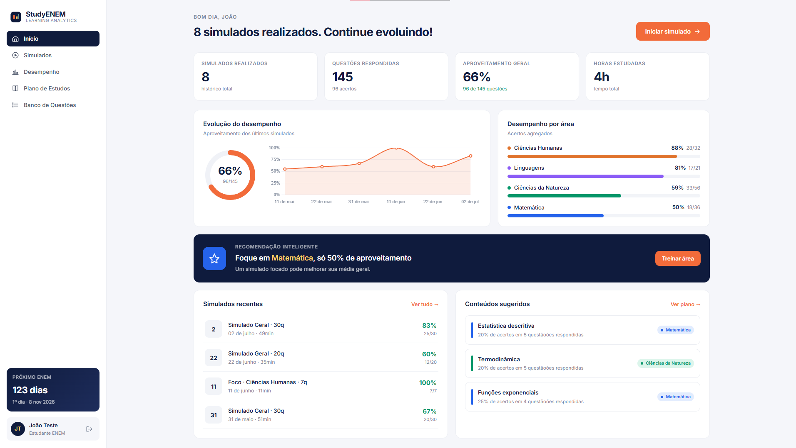
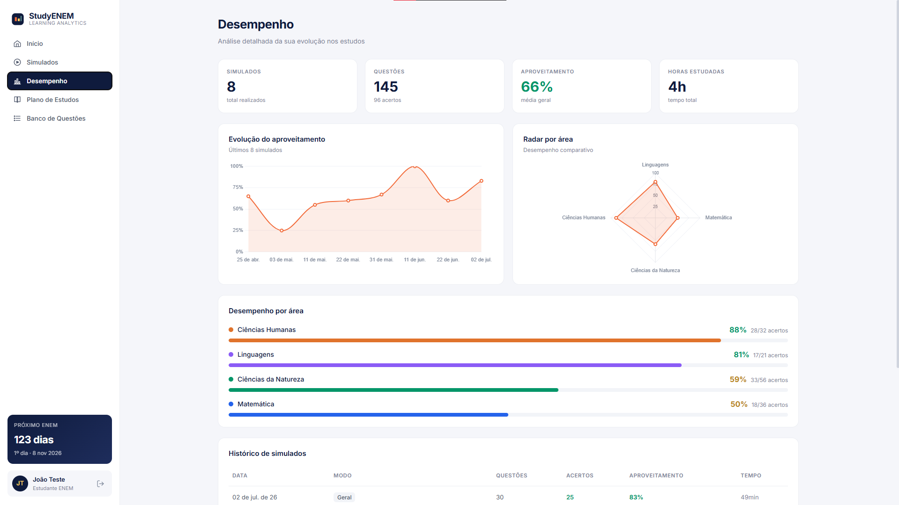
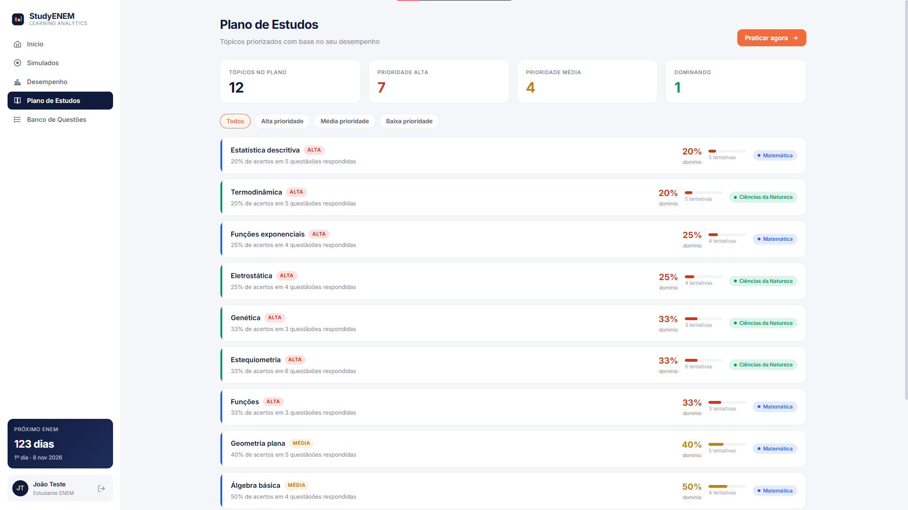
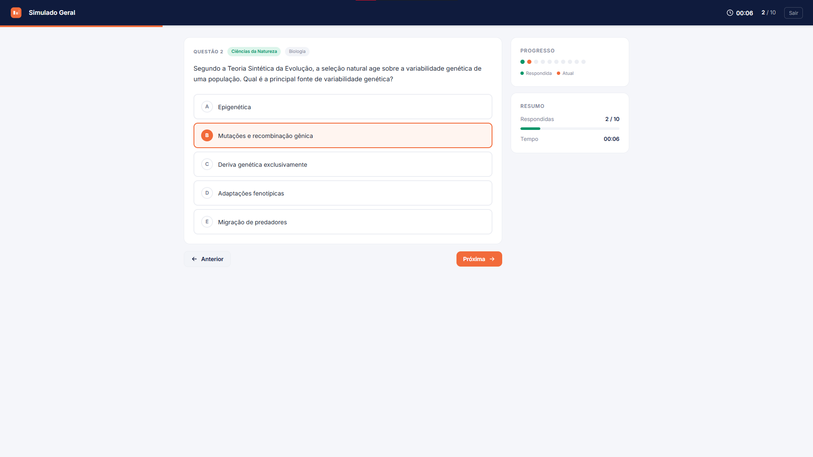

TCC · Web App
Plataforma de estudos para o ENEM desenvolvida como Trabalho de Conclusão de Curso do bacharelado em Ciência da Computação. O front-end foi feito em Angular e o back-end em C# com .NET. O grande diferencial é o uso de Learning Analytics: cada simulado alimenta métricas de desempenho por área, recomendações inteligentes e planos de estudo priorizados pela dificuldade do estudante. O projeto também envolveu pesquisas de campo para validar a experiência com estudantes reais.



